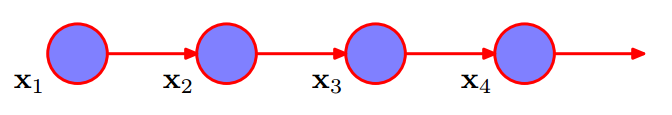
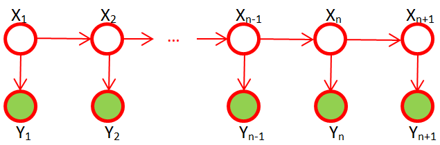

在之前学习过多次隐马模型，但是长时间不用再加上也没回头复习，回头看的时候感觉什么都忘了，所以本次重新拾起来。记得之前看过一篇英文文章讲的不错（现在无法访问了），随做了一个备份。现在以这篇文章为基础重新学习一下。目前网络上该文章的翻译版本有很多，我也会参考一些。
1 概述
个人觉得学习一个新模型，首先了解这个模型能干什么，然后在深入了解模型细节才能事半功倍。隐马模型是用来干什么的？举一个预测天气的例子：
在几百年前，英国人为了预测今天的天气(sun, cloud, rain)，可以通过观察海藻的潮湿程度（dry, dryish, damp, soggy）：如果海藻是干燥的(dry)，则今天将是一晴天(sun)；如果海藻是潮湿的(soggy)，则今天将是一雨天(rain)。也就是说海藻的潮湿程度与天气是相关的。
假设小明刚从中国来到英国，想知道上周从周一到周日的天气，由于一些原因他只能拿到上周海藻的潮湿程度的记录。那么他可以通过上面的规律推测出上周的天气。(例子不恰当，将就着用吧)。
在这个例子中，小明观察到的是海草的状态，但是要预测的天气是隐藏的。而隐马模型就是使用显性的可观察到的状态序列（一周海藻潮湿程度的记录），对隐藏的未知的状态序列（一周的天气）进行预测的模型。
2 马尔科过程(Markov Process)
交通信号灯的变化是有规律可寻的：红灯-> 绿灯->黄灯 循环转换。如果当前是红灯，那么下一个一定就是绿灯。当前状态只依赖于前一个状态，状态之间的转化是确定的。这种确定性的状态转化规律是非常容易建模模拟的。
天气的状态在三种天气(sun, cloud, rain)之间转换，但是晴天(sun)之后可能是多云(cloud)也可能是雨天(rain)。状态转化是不确定的。假设我们有一个过去100天的天气观察序列记录了过去100天的天气，那么明天的天气是什么呀。为了解决这个问题，首先需要使用100天的观察序列建立模型，然后根据模型对明天的天气进行预测。
对非确定性的状态转化序列建模就涉及到了随机过程的建模了。对一个长度为$N$的随机过程建模如下： 即这个序列中每一个时间点的状态的联合概率
$$
P(X_N,X_{N-1} \dots X_1)
$$
使用product rule进行改写：
$$
P(X_N,X_{N-1} \dots X_1)=\prod_{n=1}^NP(X_n|X_{n-1} \dots X_1)
$$
可以看到公式右边是相当复杂的，$P(X_n|X_{n-1} \dots X_1)$说明系列中时间点$n$时刻的状态是由该时刻之前的所有状态决定的。如果$N=1000$ ，那么为了求出序列中最后一个时刻所处状态的概率就需要考虑其之前的999个时刻。
所以为了对非确定性的状态转化序列建模模拟，需要进行一些假设使问题简化。此处需要引入马尔科夫性和马尔科夫过程。
马尔科夫性: 在一个随机过程$\{X_t, t\in T\}$中，如果随机过程在$t_0$时刻所处的状态已知时，它在$t=0$时刻以后的状态与其在$t=0$时刻之前的状态无关。这种性质称为马尔科夫性。 即：过程中“将来”的情况与“过去”的情况是无关的。
马尔科夫过程：具有马尔可夫性的随机过程称为马尔可夫过程。在一个随机过程中，一个状态仅取决于其之前的k个状态，这个过程称为k阶马尔科夫过程。$k=1$时为一阶马尔科夫过程。
一阶马尔科夫过程：设随机过程$\{X_t, t\in T\}$的状态空间为S，如果
$$
P (X_n=x_{n}\mid X_{n-1}=x_{n-1},\dots ,X_0=x_{0})=P(X_{t_n}=x_{n}\mid X_{t_{n-1}}=x_{n-1})
$$
其中$n>2$，$x_i \in S$，则成该随机规称为一阶马尔科夫过程。即当前状态只取决于前面的一个状态。

在上面的天气变化问题中，将三种天气(sun, cloud, rain)状态组成状态空间$S$，将一周的天气变化的过程抽象为一阶马尔科夫过程（今天的天气只与昨天有关，与前天无关），从而简化问题处理。对这样一个一阶马尔科夫过程建模如下：
$$
\begin {aligned}
P(X_N,X_{N-1} \dots X_1)&=\prod_{n=1}^NP(X_n|X_{n-1} \dots X_1) \\
&=P(x_1)\prod_{n=2}^NP(X_n|X_{n-1})
\end {aligned}
$$
一阶马尔科夫过程中，当前状态只取决于前面的一个状态，也就是说该过程只考虑状态之间的两两关系。如果状态空间中有M个状态，那么需要考虑的关系就有$M \times M$ 种。使用状态转移矩阵(state transition matrix) A表示状态之间的两两关系，矩阵中的元素$a_{ij}=P(S_j \mid S_i)$，其中$S_i$表示状态空间$S$中的第$i$个状态，$S_j$表示状态空间$S$中的第$j$个状态，$0 \le i \le |S|, 0 \le j \le |S|$。在天气变化这么一个马尔科夫过程中，状态转移概率是这样一个矩阵：
$$
\begin{bmatrix}
& sun &cloud & rain \\
sun &0.50 & 0.375 & 0.125 \\
cloud & 0.25 & 0.125 & 0.625 \\
rain & 0.25 & 0.375 & 0.375
\end{bmatrix}
$$
第二行的三个数表示，昨天是多云(cloud)的情况下，今天是晴天(sun)、多云(cloud)、下雨(rain)的概率分别为 0.25 、 0.125 、 0.625。
在一个序列中的第一个状态是没有前一个状态的，并且状态空间中的所有状态都有可能是第一个状态，所以需要一个向量来描述状态空间$S$中的值是第一个的概率，即初始状态向量($\pi$)。在天气变化这么一个马尔科夫过程中，第一天是晴天(sun)、多云(cloud)、下雨(rain)的概率分别为 0.35 、 0.05 、 0.6。即:
$$
\pi = (0.35 、 0.05 、 0.6)^T
$$
按照生成模型的观点理解一阶马尔科夫过程：
- 按照初始状态向量($\pi$)从状态空间$S$中选择一个状态$S_i$，生成过程中的第一个状态$x_1$;
- 按照转移状态矩阵$A$从状态空间$S$中选择一个状态$S_j$，生成过程中的第二个状态$x_2$, 生成的概率为$a_{ij}$ ;
- 按照该过程一次生成 $x_3 ,x_4 \dots x_n$ 。
一阶马尔科夫过程中有三个基本概念：
1 状态空间：在随机过程中可选的状态的集合。如三种天气(sun, cloud, rain)状态。
2 初始状态向量($\pi$)： 描述状态空间$S$中的值是第一个状态的概率。
3 状态转移矩阵(A)：描述每个状态之间相互转换的概率。
3 隐马尔可夫模型(Hidden Markov Models)
马尔科夫过程是对一个观察到的序列进行建模，在文章开始的例子中，“小明刚从中国来到英国，想知道上周从周一到周日的天气，由于一些原因他只能拿到上周海藻的潮湿程度的记录。”小明知道的是海藻湿度一周的状态变化序列，他不知道上周从周一到周日的天气状态，海藻的状态和天气的状态是存在紧密关系的。这里例子中存在两个状态序列：观察到的状态序列(海藻的潮湿状态)，隐藏的状态序列(一周的天气状态)。
这种存在一个隐藏状态序列一个观察状态序列且隐藏状态序列和观察状态序列存在关系的问题，可以使用隐马尔可夫模型进行建模。在隐马模型中，假定隐藏状态序列是一个一阶马尔科夫过程，观察状态序列中的每一个节点都和隐藏状态序列中的节点一一对应，这个对应关系就反应了观察状态和隐藏状态的对应关系。如下雨天(隐藏状态)会使海藻潮湿(观察状态)。隐马模型使用状态发射矩阵（emission probability matrix）$\phi$来表示隐藏状态和观察状态的对应关系

可观察状态的集合为$O$，和隐藏状态的的集合为$S$。$O_i$表示可观察状态集合中的第$i$个状态，$S_j$表示隐藏状态集合中的第$j$个状态。状态发射矩阵$\phi$中的元素:
$$
\phi_{ji}=P(O_i|S_j)
$$
文章开头的天气问题的状态发着矩阵可以表示如下：
$$
\begin{bmatrix}
& dry &dryish& damp & soggy \\
sun &0.60 & 0.20 & 0.15 &0.05 \\
cloud & 0.25 & 0.25 & 0.25 &0.25 \\
rain & 0.05 & 0.10 & 0.35 &0.50
\end{bmatrix}
$$
第一行表示，如果今天是晴天(sun)，那么今天的海藻处于四中状态(dry、dryish、damp、soggy)的概率分别为0.60、 0.20、 0.15、0.05。
note: 状态发着矩阵中每一行的和必须是1。
相对于马尔科夫过程，隐马模型多了一个观察状态序列，和一个发射状态矩阵。隐马模型包含如下五个概念：
- 隐藏状态空间：如三种天气(sun, cloud, rain)状态。
- 观察状态空间：如海藻的四中状态(dry、dryish、damp、soggy)
- 初始状态向量($\pi$)： 描述状态空间$S$中的值是第一个状态的概率。
- 状态转移矩阵(A)：描述每个隐藏状态之间相互转换的概率。
- 发射状态矩阵($\phi$)：给定一个隐藏状态时，一个观察状态出现的概率。
一个隐马模型是一个标准的马尔科夫过程加上一个观察状态集合和从隐藏状态到观察状态的关系矩阵。
隐马模型可以表示为初始状态向量($\pi$)、状态转移矩阵(A)、发射状态矩阵($\phi$)的三元组$\{\pi, A, \phi \}$ 。
4 隐马模型的应用
隐马模型可以用于解决三类问题，针对不同的问题使用不同的求解算法：
- leaning：当知道一个观察序列时，使用适当的算法训练一个HMM，求得参数$\{\pi, A, \phi \}$ 。使用 forward-backward algorithm求解。
- evaluation: 已知一个的HMM($\{\pi, A, B\}$ 已知)，和一个观察序列时，求观察序列出现的概率。使用forward algorithm 求解。
- decoding: 已知一个观察序列和其对应的HMM时，求一个与之对应的隐藏状态序列。使用Viterbi algorithm求解。
参考资料
Pattern Recognition and Machine Learning